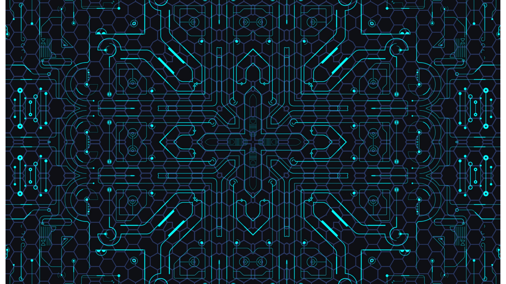

Projects
FAIROS: Disciplinary Improvements: Dark Matter Data Commons - A FAIR and Open Science Infrastructure for Astrophysical Discovery
SAFARI: Scientific Analytics, Forensics, and Reproducibility for Workflows in Cyberinfrastructure (CI)
POSE: Phase I: Towards an Open-Source Ecosystem for Accelerating High-Resolution Terrain Parameter Computation in Earth Science Applications
CSSI: Frameworks: Applying Artificial Intelligence Advances to the Next Generation of Workflow Management on Modern Cyberinfrastructure
Methodology for Explaining Performance Variations Across Compilers and Compiler Options in HPC Applications
Study Performance Portability of the Vector Particle-In-Cell Project (VPIC) across Architectures (Stage 3)

LLNL-LDRD-Software Stack Development for Next Generation Exascale Platforms

Improvement of Checkpointing Performance for Reproducibility Studies

SENSORY: Software Ecosystem for Knowledge Discovery - a Data-Driven Framework for Soil Moisture Applications
EAGER: A Comprehensive Approach for Generating, Sharing, Searching, and Using High- Resolution Terrain Parameters
CIF21 DIBBs: PD: Cyberinfrastructure Tools for Precision Agriculture in the 21st Century
Collaborative Research: SHF: Small: Model-driven Design and Optimization of Dataflows for Scientific Applications

SHF: Small: Methods, Workflows, and Data Commons for Reducing Training Costs in Neural Architecture Search on High-Performance Computing Platforms

OAC: Piloting the National Science Data Fabric: A Platform Agnostic Testbed for Democratizing Data Delivery
AI TechX: A UTK-IBM Partnership for Accelerating AI Inference for Real-World Impact
ANACIN-X: Analysis and Modeling of Non-determinism and Associated Costs in eXtreme Scale Applications
Data-Aware Scheduling with the Convergence of HPC and Cloud
Leveraging Kokkos Abstractions to Automate Checkpointing
Leverage Containerized Environments for Reproducibility and Traceability of Scientific Workflows - the case study of Analytics for Neural Network Workflows

Flux Scheduler Specializations: Improving Workflow Performance with Scheduler Structure and Policy Tuning

Augmenting Hatchet to support scalability and replicability solutions for HPC applications

Collaborative Research: PPoSS: Planning: Performance Scalability, Trust, and Reproducibility: A Community Roadmap to Robust Science in High-throughput Applications

Collaborative Research: EAGER: Advancing Reproducibility in Multi-Messenger Astrophysics

Study Performance Portability of the Vector Particle-In-Cell Project (VPIC) across architectures

JDRD: Empowering Training and Validation Stages in Al-Orchestrated Workflows

EAGER: Reproducibility in Computational and Data-Enabled Science-Paradigms, Practices, and Infrastructure

Analytics for Molecular Dynamics (A4MD)

CIF21 DIBBs: PD: Cyberinfrastructure Tools for Precision Agriculture in the 21st Century

Study of Data-intensive Workflows on Next-generation Systems with Emphasis on Memory Access
Moving towards self-adjusting scheduling policies for high performance workflows with Flux’s fully hierarchical scheduling

Driving Next-Generation Schedulers with Machine Learning-Based Application Patterns

Collaborative: EAGER: Exploring and Advancing the State of the Art in Robust Science in Gravitational Wave Physics